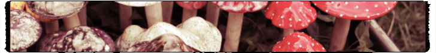

While preparing this example, I asked my nine-year-old daughter, "Anaïs, imagine you have a basket full of mushrooms. How would you go about finding out which ones are poisonous?"
"Dad, why would I want to know?" she replies, rolling her eyes. "No matter if they are poisonous or not, they are dis-gust-ing."
"OK, fair enough", I sigh, "wrong daughter."
"Naomi", I turn to my seven year old, "how could you find out if a mushroom is poisonous?"
"Well", she says. "I'd just eat it. If I die, it's poisonous."
"But, come on, there must be a better way! Think, please!"
"Think? Can't you see that I'm playing? Ask mom if you must!" She groans. So do I.
"Mushrooms? Where did you buy them?" my wife asks.
"Good question, but - ... - it doesn't matter."
"No Sir, it does matter!"
"Why?" I ask dubiously.
"I'd have to to know if they are organic, obviously."
Obviously. I play along, "Well, whatever, assume I found them in the forest, so they are all organic."
"Aha!", she says triumphantly. "Then it's easy! If they are organic, they simply must be good for you. Hence, they cannot be poisonous!"